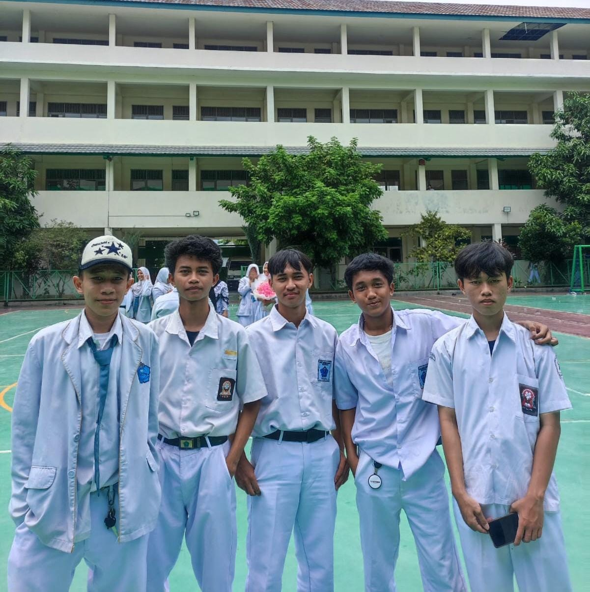

kelompok 3
Kami adalah lima pemuda yang penuh semangat dan bertekad bulat dalam menciptakan sebuah inovasi besar dalam dunia teknologi, khususnya dalam bidang Teknik Komputer dan Jaringan (TKJ). Sejak awal, kami sudah sepakat untuk bekerja dengan penuh kekompakan, saling mendukung satu sama lain dalam setiap langkah yang kami ambil. Masing-masing dari kami memiliki keahlian dan keterampilan yang saling melengkapi, yang memungkinkan kami untuk menyelesaikan segala tugas yang diberikan dengan hasil yang terbaik.
Kami memahami bahwa di masa depan, dunia ini akan semakin bergantung pada teknologi, dan kami percaya bahwa dengan kerja keras, dedikasi, dan semangat yang tinggi, kami akan menjadi para pemimpin muda yang sukses di Indonesia. Tidak hanya sekadar ingin berkontribusi pada perkembangan dunia teknologi, tetapi kami juga bercita-cita untuk menjadi pengusaha-pengusaha muda yang mampu memimpin perusahaan-perusahaan besar dan menciptakan lapangan pekerjaan bagi banyak orang. Kami ingin membawa perubahan positif dan mendorong kemajuan teknologi di tanah air.
Tekad kami untuk meraih cita-cita ini tidak pernah goyah. Meskipun kami tahu bahwa jalan yang akan kami tempuh tidak akan mudah, kami percaya bahwa setiap tantangan yang kami hadapi akan menjadi batu loncatan untuk menuju kesuksesan. Kami saling mengingatkan satu sama lain untuk terus berkembang, belajar, dan beradaptasi dengan perkembangan teknologi yang pesat. Dengan visi yang jelas, semangat yang membara, dan rasa tanggung jawab yang tinggi, kami yakin bahwa kami dapat mewujudkan impian besar kami dan menjadi pemimpin masa depan di Indonesia.
Bersama-sama, kami akan terus berjuang, menaklukkan setiap rintangan yang ada, dan meraih setiap peluang yang datang. Kami yakin bahwa kerja keras kami, yang dibarengi dengan doa dan usaha, akan membawa kami menuju kesuksesan yang kami impikan. Kami berlima tidak hanya melihat diri kami sebagai tim yang solid, tetapi sebagai sebuah keluarga besar yang saling mendukung untuk mencapai tujuan yang lebih besar.
Dengan tekad dan komitmen yang kami miliki, kami akan terus melangkah maju dan meraih masa depan yang cerah. Kami yakin bahwa kelak, kami akan menjadi pemimpin muda yang menginspirasi, menciptakan perubahan positif, dan memberikan kontribusi besar bagi perkembangan dunia teknologi serta perekonomian Indonesia.